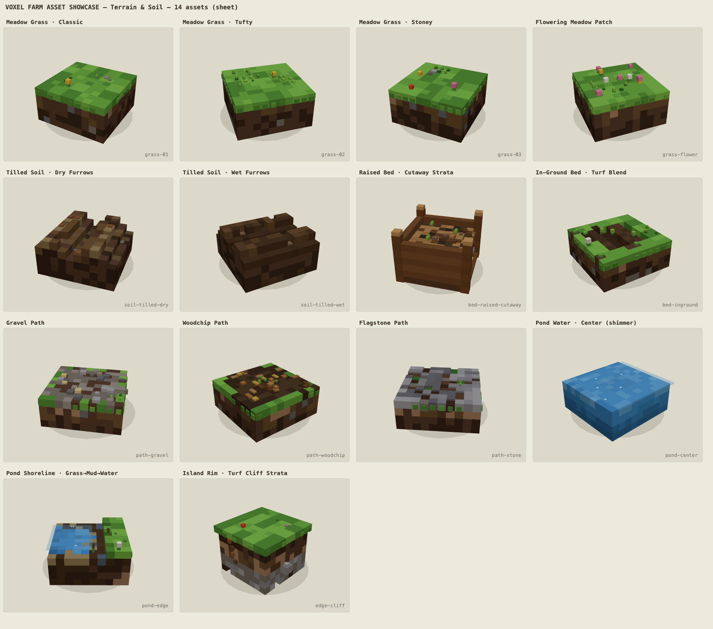
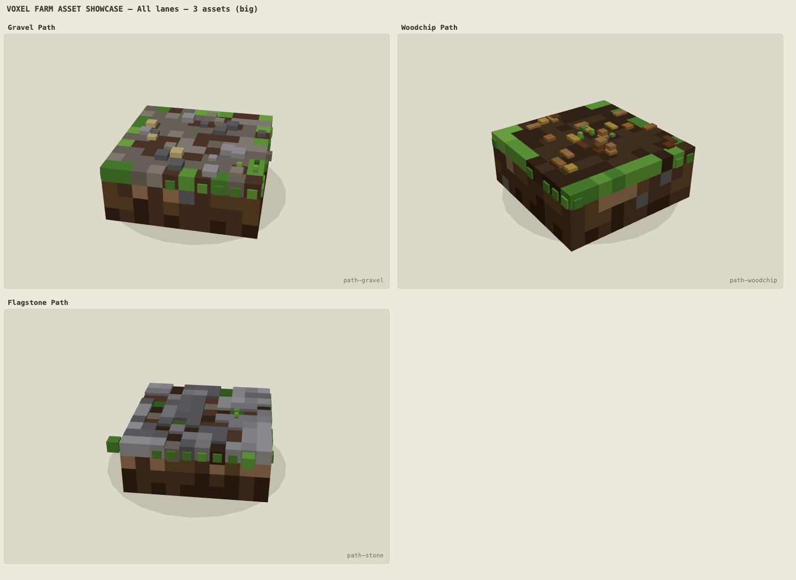
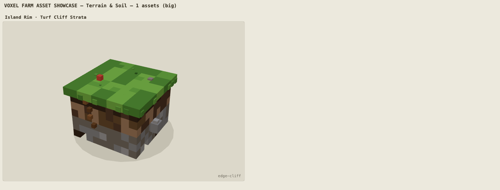
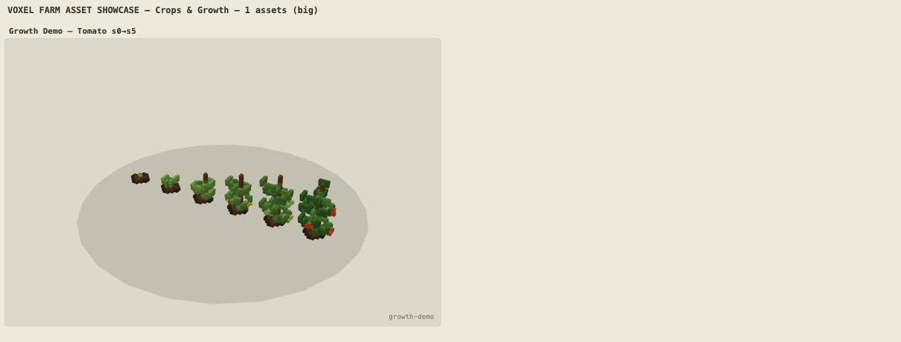
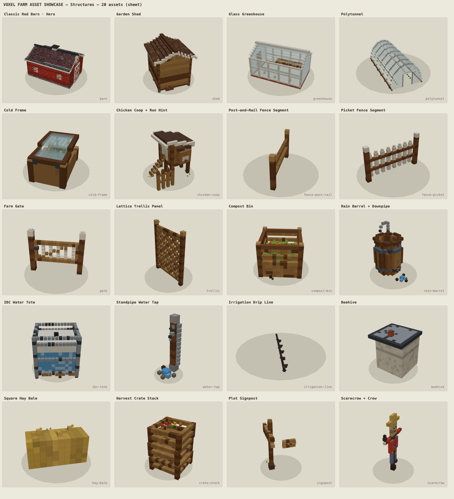
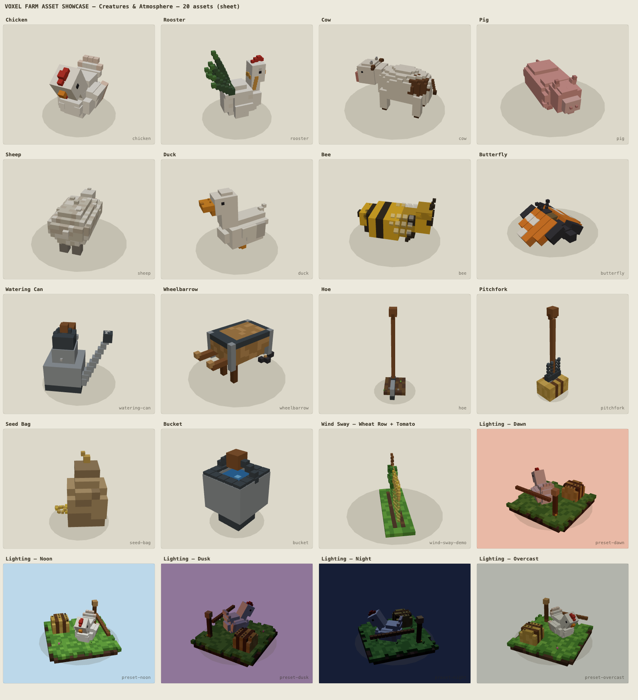
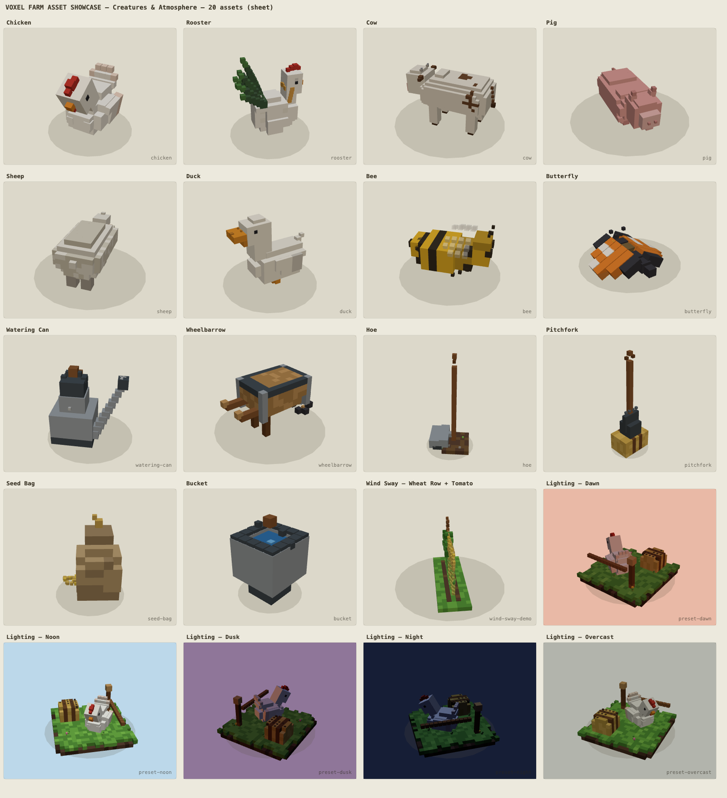

Lane A — Terrain & Soil PASS iteration 3
r2: REVISE — r2 evidence: soil/water/cliff/paths closeups + sheet r2 (Aug 23 ~17:45-18:25); remaining gaps carried into r3
r3: accepted — r3 evidence: soil/water/paths/bed closeups + sheet r3 (Aug 23 ~23:40-24:00); latest round accepted into the merged beta candidate per MISSION-CONTROL.md

lane-a-sheet-r3.png
lane-a-closeup-paths-r2.png
lane-a-closeup-cliff-r1.pngLane B — Crops & Growth Stages PASS iteration 1
r1: accepted — r1 full-archetype sweep: all 17 crop archetypes s0-s5 + growth-demo (Aug 23 ~20:30-21:00); accepted into the merged beta candidate per MISSION-CONTROL.md

lane-b-growthdemo-r1.pngLane C — Structures PASS iteration 1
r1: accepted — r1 structure sweep: barn, chicken coop, fences, greenhouse, polytunnel+cold-frame, props (+sheet r1, Aug 23 ~16:10-16:45); accepted into the merged beta candidate per MISSION-CONTROL.md

lane-c-sheet-r1.pngLane D — Creatures & Atmosphere PASS iteration 2
r1: REVISE — floating tool grips, buried fork tines, weak cow face
r2: fixed — welded grips, L-blade hoe, separated tines, rebuilt cow+eyes, dithered sheep

lane-d-sheet-r2.png
lane-d-sheet-r1.png